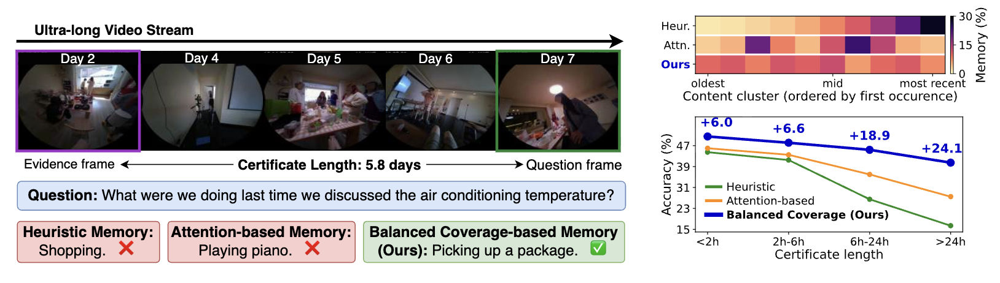
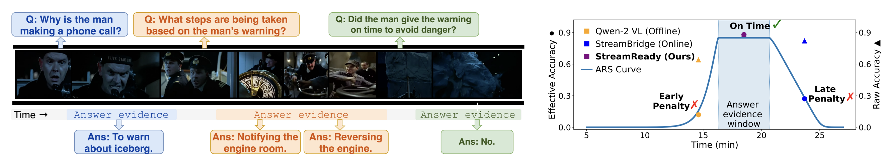
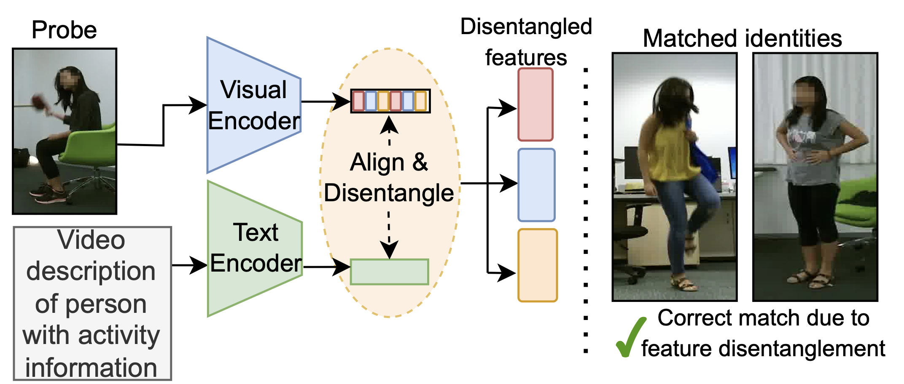
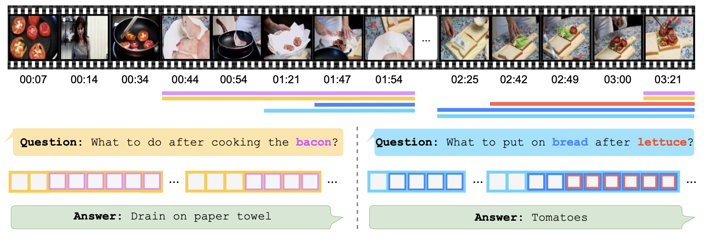
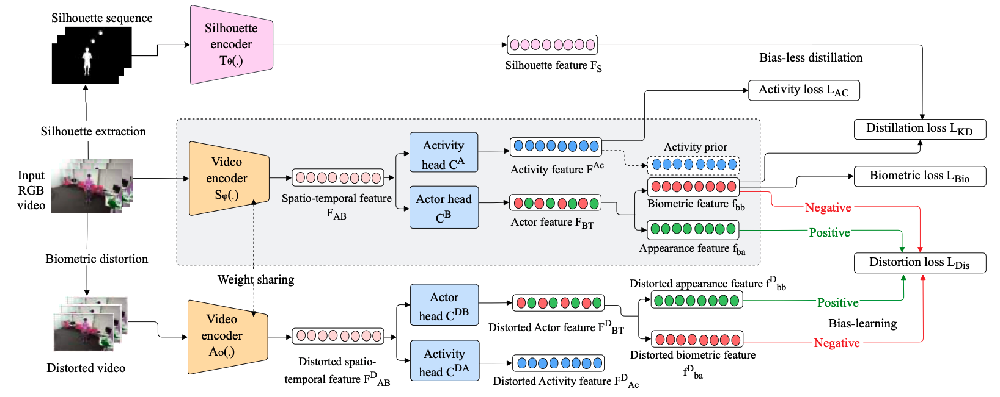

Remembering What Matters: Balanced Memory for Ultra-Long Streaming Videos
A streaming video model with a balanced memory mechanism that effectively processes week-long streaming video without forgetting early information.
Applied Scientist II, Ring · Amazon
I am an Applied Scientist II at Ring, Amazon, where I work on multimodal video understanding for real-world streaming systems.
I earned my PhD from University of Central Florida, advised by Dr Yogesh Singh Rawat, at the Center for Research in Computer Vision (CRCV).
My research sits at the intersection of deep learning and computer vision, focused on long-form and streaming video understanding and multimodal reasoning.
Reverse chronological. A complete list is on my Google Scholar.

A streaming video model with a balanced memory mechanism that effectively processes week-long streaming video without forgetting early information.

A memory-augmented, task-agnostic multimodal framework that gives Multimodal Large Language Models real-time, continuous understanding of long-form streaming video — learning both what to answer and when to answer under a streaming budget.

A disentanglement-based multimodal architecture for robust activity-aware person identification, using language-guided, motion-centric temporal modeling to separate identity from appearance.

A task-aware, memory-augmented hierarchical framework that equips Multimodal Large Language Models for efficient understanding of arbitrarily long-form video.

Introduced the task of activity-biometrics, scaling gait-based person re-identification to activity-aware re-identification, with a disentanglement-based framework linking actions to biometric traits.
Applied Scientist II
Ring, Amazon · Bellevue, WA
Multimodal video understanding for production streaming systems, spanning long-form temporal reasoning, efficient modeling under tight compute budgets, and evaluation of multimodal large language models on real-world video.
Applied Scientist Intern
Ring, Amazon · Bellevue, WA
Built a balanced-memory streaming architecture for ultra-long video understanding, retaining early context across week-long streams. Led to a first-author submission to ICLR 2027.
PhD, Computer Science Expected
University of Central Florida · GPA 3.92 / 4.0
Advisor: Dr Yogesh Singh Rawat.
Additional Dissertation Committee Members: Dr Mubarak Shah,
Dr Chen Chen,
Dr Soheil Sabri.
MS, Computer Science
University of Central Florida